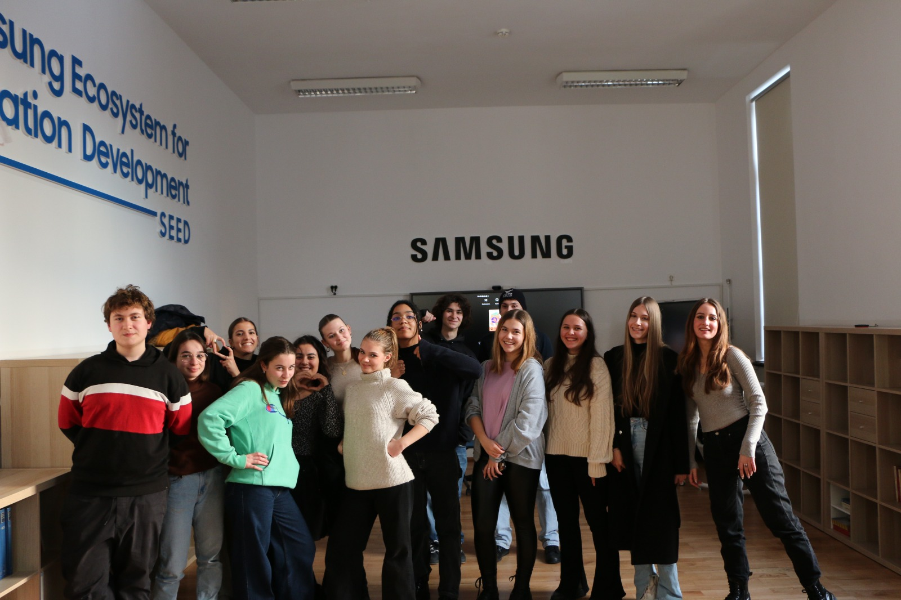
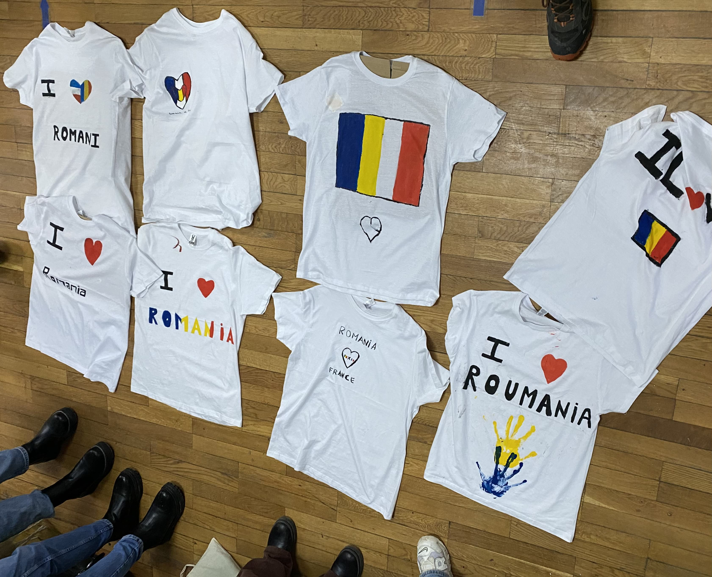
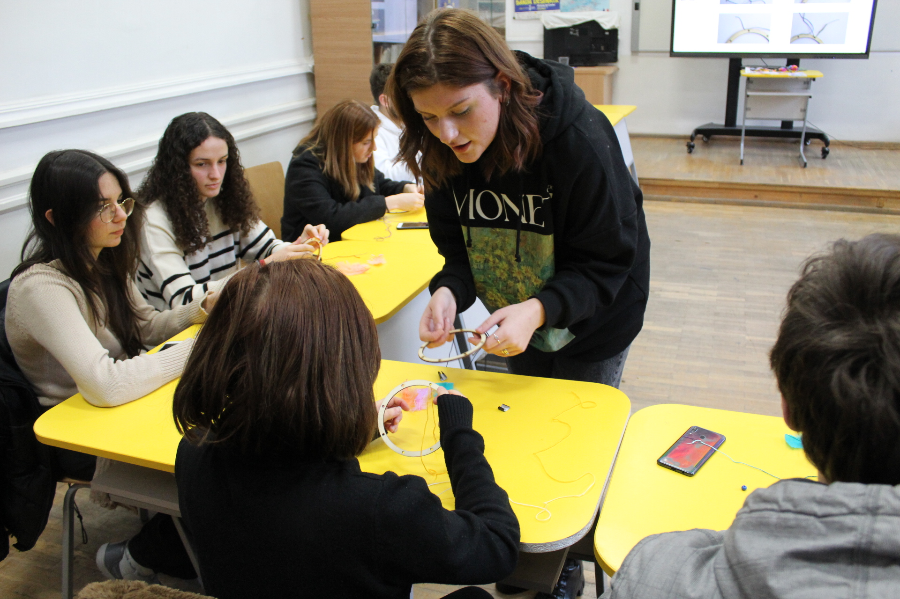

Mardi / Tuesday
Après une matinée bien chargée avec la visite du parlement et du musée d'art contemporain, le groupe est rentré à l'école pour manger les lasagnes et le tiramisu mis à leur disposition. Par la suite, les élèves se sont répartis dans 5 groupes proposant chacuns une activité différente. Les élèves roumains, très investis dans le projet, ont décidé d'encadrer les différents groupes afin de partager un moment de complicité franco-roumain. Les activités proposées (dances traditionnelles, théâtre, livres pop art, attrape rêve, peinture de t-shirt) ont effectivement permi un rapprochement entre les élèves de l'échange entre dreamcatcher ratés et dances plus assez traditionnelles.
After a busy morning with a visit to the Parliament and Museum of Contemporary Art, the group returned to school to eat the lasagna and tiramisu at their disposal. After that, students were divided into 5 groups each with a different activity. Romanian students, very invested in the project, decided to supervise the different groups in order to share a moment of Franco-Romanian complicity. The activities offered (traditional dances, theatre, pop art books, dream catchers, t-shirt painting) have indeed allowed a rapprochement between the students of the exchange between dreamcatcher failures and dances more traditional enough.
Théâtre / Theater

A travers le théâtre, les élèves roumains ont voulu combiner les deux cultures pour permettre un rapprochement autour de l'auteur Ionesco, venu plusieurs fois en France pour écrire ses pièces, et de son impact sur le théâtre absurde. "Les français ont été receptifs à l'activité qui a été amusante pour tous.", Ingrid Alecsiu, membre encadrement de l'activité.
Through the theatre, the Romanian students wanted to combine the two cultures in order to bring together the author Ionesco, who came several times to France to write his plays, and his impact on the absurd theatre. The French were receptive to the activity which was fun for all." , Ingrid Alecsiu, a member of the activity management.
Peinture T-Shirt / T-Shirt Painting

L'idée de la peinture sur t-shirt avait pour but de faire connaître les habits traditionnelles roumains grâce aux patrons mis à disposition par les encadrants. Les élèves ont peind leurs t-shirts à leur guise en exprimant leur amour pour la Roumanie comme certains en inscrivant "I love Romania".
The idea of painting on the t-shirt was to make known the traditional Romanian clothes thanks to the patterns made available by the supervisors. The students painted their T-shirts as they wished by expressing their love for Romania as some by writing "I love Romania".
Pop-Art

L'activité pop-art inspirée par les monuments visités tout au long du voyage a servi de journal de bord pour en garder un souvenir. Malheureusement, l'activité n'a pas pu être terminée par manque de temps mais c'est tout de même bien déroulée dans la joie et la bonne humeur.
The pop-art activity inspired by the monuments visited throughout the trip served as a diary to keep a souvenir. Unfortunately, the activity could not be completed due to lack of time but it still went well in joy and good mood.
Dance
L'animation la plus demandée mais aussi la plus dynamique (bruyante) a été la dance. Pour celle-ci, les encadrants ont recherché et mélangé différents styles et musiques afin d'avoir une vue globale des dances traditionnelles et d'en tirer les plus importantes. Ana Craciun, l'encadrante, a regroupé des dances venues de plusieurs régions de Roumanie pour créer une chorégraphie et la faire apprendre aux autres élèves ( sans oublier les professeurs).
The most requested animation but also the most dynamic (noisy) was the dance. For this one, the supervisors researched and mixed different styles and music in order to have a global view of traditional dances and to draw the most important ones. Ana Craciun, the supervisor, gathered dances from several regions of Romania to create a choreography and make it teach to other students (without forgetting the teachers).
Dreamcatcher

A travers le théâtre, les élèves roumains ont voulu combiner les deux cultures pour permettre un rapprochement autour de l'auteur Ionesco, venu plusieurs fois en France pour écrire ses pièces, et de son impact sur le théâtre absurde. "Les français ont été receptifs à l'activité qui a été amusante pour tous.", Ingrid ..., membre encadrement de l'activité.
Through the theatre, the Romanian students wanted to combine the two cultures in order to bring together the author Ionesco, who came several times to France to write his plays, and his impact on the absurd theatre. The French were receptive to the activity which was fun for all." , Ingrid ..., a member of the activity management.
Enfin / Finally
Cette après-midi a été très amusante et a permis le rapprochement entre les élèves qui ont pu se détendre. Désormais, le voyage retour est attendu avec impatience par les roumains.
This afternoon was very fun and allowed the connection between the students who were able to relax. Now the return trip is eagerly awaited by the Romanians.